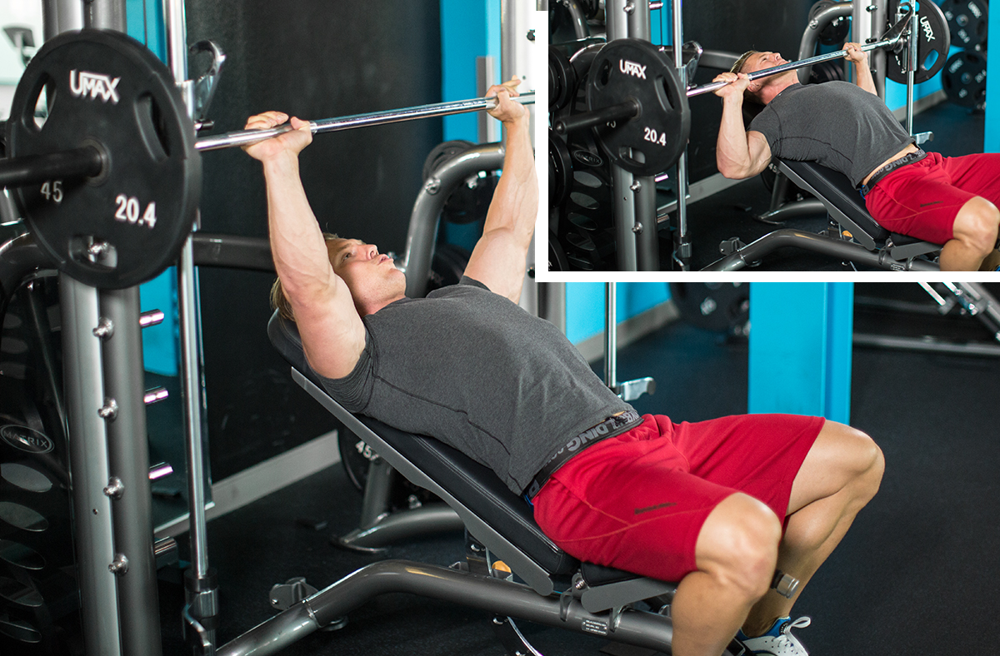

1. Barbell Bench PressWhy it's on the list: You can generate the most power with barbell lifts, so the standard barbell bench allows you to move the most weight. It's also an easier lift to control than pressing with heavy dumbbells. The exercise is easy to spot and relatively easy to learn (if not master), There are plenty of bench-press programs you can follow to increase your strength In your workout: Do it toward the start of your chest workout for heavy sets in lower rep ranges. Consider varying your grip width for more complete chest development. |
|
2. Flat Bench Dumbbell PressWhy it's on the list: With dumbbells, each side of your body must work independently, which recruits more stabilizer muscles; dumbbells are harder to control than a barbell. Dumbbells also allow for a longer range of motion than the barbell bench press, both at the bottom and top of the movement. Flat dumbbell presses allow you to hoist a fairly heavy weight, and they make for a good alternative if you've been stuck on the barbell bench for ages. In your workout: Do flat dumbbell presses toward the start of your chest workout for heavy sets in lower rep ranges. We don't typically recommend doing dumbbell presses in addition to the barbell bench press, because both moves are so similar. |
|
3. Low-Incline Barbell Bench PressWhy it's on the list: Many benches are fixed at a very steep angle, which requires a larger contribution from the front delts than the chest to move the weight. If possible, go for a less-steep incline to hit the upper pecs without as much stress on the delts. You can also easily do low-incline benches with an adjustable bench on the Smith machine . If you're really looking to build that shelf of an upper chest, EMG results have suggested that bringing your grip in a bit closer may hammer upper-chest fibers significantly more. In your workout: Many chest workouts start with flat-bench movements first, then progress to inclines, but it's time to get out of that bad habit. Every so often, start with inclines. The benefit is that you'll be fresher and can lift more weight, which puts a greater amount of stress on the upper pec fibers and could lead to more growth |
 |
4. Seated Machine Chest PressWhy it's on the list: Free-weight pressing moves on a flat bench are great, but the machine press has some unique benefits. For one, it's easier to slow down the repetition, both in the concentric and eccentric phases. Stack-loaded machines are also great for quickly doing dropsets. EMG research demonstrates that the machine bench press recruits much less of the three heads of the deltoid (anterior, middle, and posterior) than free-weight variations because of a decreased need for humeral stabilization. This allows you to really target your pecs. In your workout: Again, do machine exercises at the end of your workout. For anyone looking to build mass, machines give you a greater chance to pump your pecs with minimal shoulder assistance. |
|
5. Incline Bench Cable FlyWhy it's on the list: Not many single-joint exercises made the list, but this is one of our favorites. It's an effective move to isolate the pecs after completing your multijoint exercises. Cables allow for continuous tension throughout the exercise's full range of motion. If you've got a good chest pump going, nothing beats looking back at yourself in the mirror as you squeeze out a few more reps. In your workout: Do incline cable flyes at the end of your workout for slightly higher reps (sets of 10-12). If you're training with a partner, do a few dropsets for some real masochistic, muscle-building fun! |